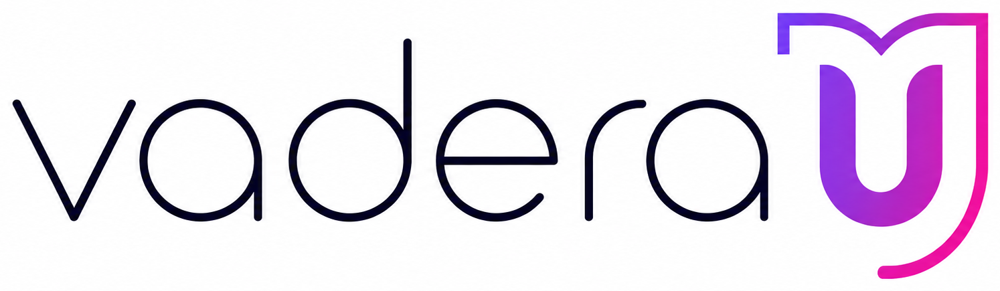
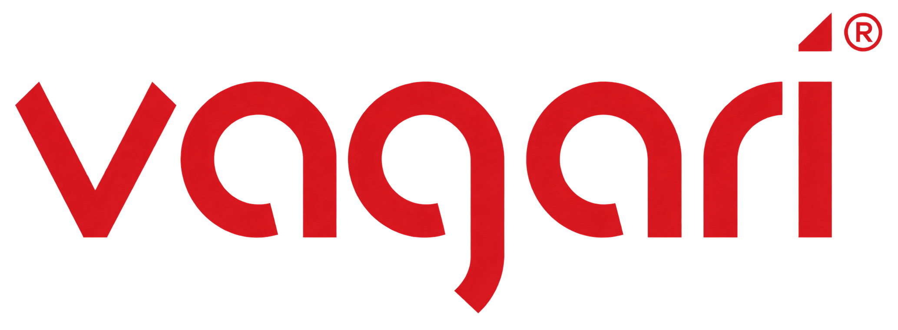

Find your direction.
Clarify your message, your audience, and the content pillars that give every post a purpose.
YOUR BUSINESS. MY PERSONAL COMMITMENT.
I’m Miriam Otano. Your strategy partner, content planner, and the person helping your business show up with purpose.
Let’s meetExplore ways to work togetherSalons & barbershops · Local shops · Service businesses
MEET YOUR CONTENT PARTNER
Good marketing starts with understanding the person behind the business.
I help small business owners bring clarity to their message and consistency to their social presence. Whether you need a fresh start, a practical plan, or ongoing support, we’ll find a starting point that fits.
HANDS-ON BRAND EXPERIENCE
My social-media work has spanned creator technology, education, fashion, and consumer products. I bring that range to the way I approach your business: understand its audience, find its voice, and show up consistently.
SOCIAL-MEDIA EXPERIENCE WITH

vaderaUEducation
VAGARiConsumer productsA LITTLE CLARITY GOES A LONG WAY
Thoughtful strategy. On-brand content.
Consistent, hands-on support.
Clarify your message, your audience, and the content pillars that give every post a purpose.
Turn your photos, footage, and ideas into captions, graphics, and short-form content that feel like your business.
From planning and publishing to reviewing performance, keep your social presence moving without doing it all alone.
WAYS TO WORK TOGETHER
THE REFRESH
$349 one time
For an existing presence that needs a clearer, more cohesive direction.
THE ROADMAP
$750 one time
For a business ready to connect its message, channels, and content.
THE ONGOING PARTNERSHIP
from $1,000 /mo
For a business that needs a plan—and someone to help carry it through.
Monthly management begins with a three-month commitment, then continues month-to-month. The 16 primary pieces are a total across posts and Reels. Platforms, Stories, distribution, and engagement are agreed in your proposal. On-site filming, professional photography, paid advertising, and ad spend are separate.
Social Media Audit — $199
A focused review with practical recommendations.
30-Day Content Strategy — $399
A clear plan for your next month of content.
Custom Growth Strategy — from $1,500/month
A custom proposal for broader needs or multiple locations.
BEFORE WE MEET
No. You can start with a one-time reset or strategy project. Monthly management starts with a three-month minimum, billed monthly, then continues month-to-month.
For most monthly packages, you provide the raw photos and footage. Editing and agreed content production are included; on-site filming and professional photography are quoted separately.
Instagram, Facebook, TikTok, and other short-form platforms as appropriate. Your proposal confirms the exact platforms and distribution.
No. Paid advertising and ad spend are separate from organic social media management.
Yes. We can build on your current website and social presence. Growth Foundation includes website messaging recommendations, not website development.
There is no guaranteed growth timeline. The initial focus is a clearer brand presence, a consistent content plan, and ongoing performance review.
LET’S START WITH A CONVERSATION
Tell me where you are, what’s working, and what feels stuck.
We’ll talk through a practical next step.
20 minutes · Opens Miriam’s existing booking page